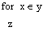
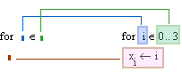
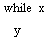
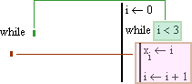

Program Loops |
A loop is a block of code that causes one or more statements (the body of the loop) to iterate until a termination condition occurs. There are two kinds of loops:
For loops are used when you know exactly how many times the body of the loop should execute.
While loops are used when you want to stop execution upon the occurrence of a condition but you don't know exactly when that condition will occur.
Keystroke: [Ctrl] ["]
Do not type the word "for." It does not produce the operator.

Evaluates z for each value of x over the range y. Typically, at least one expression in the loop body, z, uses the value of x to change the calculation for each evaluation. Use a for loop when you know exactly how many times you want the body of the loop to execute.

When you use a for loop, you must know the number of times you want the loop to execute; the final result of the iteration is not important.
You may want to exit a loop before its termination condition is met, or skip a particular iteration and proceed to the next one. You can control the execution of either type of loop by using the break and continue operators.
Keystroke: [Ctrl] ]
Do not type the word "while." It does not produce the operator.

Evaluates y while x is nonzero (true). The condition expression is evaluated at the beginning of the while loop, so it is possible that the loop never executes. The loop stops iterating as soon as the condition is false and returns the last value calculated in its body on the previous iteration.
